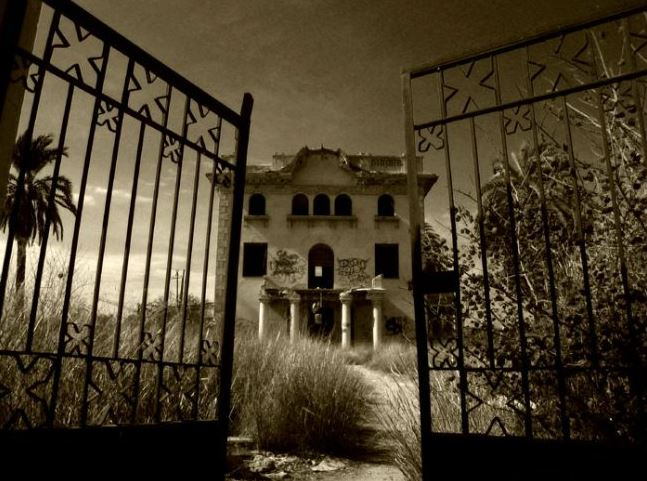

THE MYSTERY HOUSE

In a small village there was an abandoned house on which many stories were told. One Halloween day, four friends (Raul, Fran, Carolina and Lorena) went to inspect the house, but before they enter they heard a scream and they decided to leave. At night, when they where ordering candies, they kept asking between them who could have been in that place and decided to approach again. It wasn't yet 12 o'clock at night, but when they arrive they felt a chill. They entered and when they were walking, a porcelain doll fell in their path. It didn't fright them and they continue wolking. They found two chairs in front of a fireplace where there was a candle and a music box that turn on from nothing and began to sound.
Afraid, they looked for a way out, but some shadows reached them and they understood everything. They could see a girl of about eleven years playing the ouija while her parents were down caressing her brother, a little baby. In what seemed like an impulse, she took an ax and went down to the room where she killed her parents and brother. The four children understood that the girl was jealous of the attention stolen. When they tried to leave, they say that the Infanta cursed them, and since then, each Halloween night, Raul, Fran, Carolina and Lorraine have to visit that house and spend hours "playing" with the spirit.
THE COLLECTOR OF HALLOWEEN STORIES

Luis liked the stories of Halloween. He liked that much that he started to collect all we know about this night for make a book called "Halloween Tales". He started with the idea of writing the book with 5 years and the continuous for a long time. When he was 10, he already had more than 100 stories in his notebook. When he turned 15, the Halloween night, something strange happened ... Luis disappeared.
His parents found him dead, dressed as a zombie on his bed and with his story book. No one could say what had happened. Since then, they feel that Luis it's on the streets at Halloween nights, hoping to get more and more stories for his book.
LA NOCHE DE LOS SANTOS
In Spain, we celebrate "La noche de los santos". One year, a group of friends approached the cemetery to carry flowers to their dead family, but that night, there were no one in the cemetery. Apparently they have returned to their homes passed 10 in the evening. They do not care and went on their way; Some boys sat on a fence, while the other two girls stood in front of them looking at the cemetery.
The teenagers could see an older woman floating, but just from the waist up. At the same time they followed him in the legs and the hands. They scream and went out immediately. On the way they found other young people from the school who heard and see what they lived and who confirmed what happened.
The legend tells that an old woman was cooking when she decided to go to the store, but she forgot to turn off what she had on the stove. When she returned to the house she saw that the house was burning and she started running arrive faster. While she was running, a car run over her and cut her in two. .. Was she?